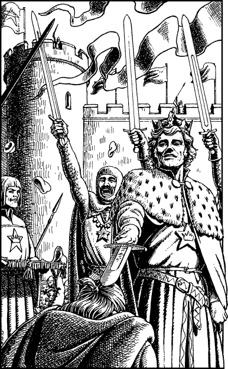

148
At dawn, Marshal Phedros prepares a written proclamation denouncing Sadanzo as a traitor, a murderer, and an agent of Naar. Phedros revokes the Baron’s kingship and he announces that Crown Prince Karvas shall accede as rightful heir to the throne of Siyen. The proclamation is signed by the nobles of Siyen, and then hundreds of palace scribes set about making copies that are affixed with the Marshal’s seal and dispatched by messengers to every town, city, and province in the realm.
News of Karvas’ return spreads like wildfire through the capital, aided by a legion of town criers who announce that the Prince’s crowning will take place at noon in the Palace Square. Hundreds of cheering citizens fill the square when you and Karvas and the other dignitaries arrive by horse-drawn coach for the ceremony. The populace are weeping and shouting with joy that they are to be spared the tyranny of Sadanzo’s rule. With the blessing of the gathered nobles, Marshal Phedros proclaims Karvas the true King of Siyen, and with due solemnity he places the State Crown upon his head. Gladly Karvas accepts his birthright and he rises to receive the adulation of the excited crowd. As the cheering gradually subsides, he turns to you and bids you kneel before him. You obey his command and Karvas unsheathes his sword. He dabs its blade lightly upon your head and smiles.
‘Arise, Sir Kai, for I proclaim that you are now a Knight of Siyen.’ The crowd cheers loudly, though not for their king. This time their cheers are for the Kai Grand Master of Sommerlund without whom their beloved Prince would never have claimed his throne.

You accompany King Karvas and his noble entourage to the Royal Palace where the celebration of his ascendance to the throne begins with a banquet, and concludes with a procession of royal coaches that visits every quarter of the city. The citizens of Seroa shower their new king with flowers, and they heap you with praise for ridding them of vile Baron Sadanzo.